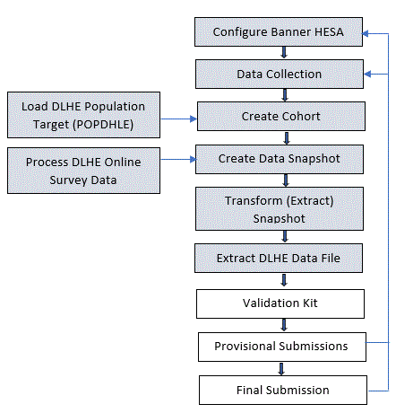

HESA DLHE Collection
Banner HESA require that all publicly funded higher education institutions conduct a survey of Destinations of Leavers from Higher Education (DLHE) each year.
The details of the survey change from year to year, and current information can be obtained at the HESA website: http://www.hesa.ac.uk
Banner HESA provides data collection and processing capabilities to help you gather the required information and submit it to HESA.
- HESA Destination of Leavers (SKADL11) page
- HESA Cohort (SKAHCOH) page
- Supplemental General Person Information (SKASPIN) page
Producing the DLHE Return
HESA reporting requirements are complex and different institutions structure their data differently and therefore uses the Banner Mass Data Update Utility (MDUU) to provide maximum flexibility and to manage DLHE processing.
A detailed set of process rules are delivered for use with Banner HESA. You can use these as delivered or customise them to your institution's needs.
This document uses the following key terms to describe MDUU elements.
- Process: This represents a set of tasks sharing a common business area. MDUU security allows you to associate users and user classes to a given process. If this functionality is activated, only users assigned to a given process will be able to execute this process.
- Task: This is a job that is carried out as part of a process, such as creating a HESA cohort or taking a snapshot of data from the original data sources and gathering them in more synthetic (eventually generated) tables.
- Activity: This is a processing element that is carried out as part of a task, such as a stage in cohort creation, a data copy, or a data transformation. An activity updates a single table and can be reused in several tasks.
Here is the top-level process flow for Banner HESA DLHE reporting:

DLHE Data Collection
Processing the HESA DLHE return consists of the following tasks.
- Processing data collected by HESA on the centrally hosted web survey into Banner (assuming that you have subscribed to this) (discussed in this chapter)
- Collecting supplementary data from the HESA DLHE questionnaire or telephone survey (discussed in this chapter)
- Creating the HESA Cohort from the POPDLHE file (discussed in Cohort Processing section)
- Processing the snapshot and the extract, and exporting the DLHE return (discussed in Snapshot and Extract Processing section)
This rest of this chapter discusses the activities involved to support DLHE data collection. This chapter also discusses collecting and recording supplemental data for DLHE.
Activities
The following Banner Mass Data Update Utility (MDUU) activities support DLHE Web data file processing.
Data cross-reference information for these activities can be found in the HESAnnnnnn_process.xls file (where nnnnnn in the file name represents the release number), which accompanies this release.
The activities in the ESC_HDL11_LOS task load and match data from the Web data file into SKBDO11 for viewing in the DLHE Web Data (SKADO11) page. The activities in the ESC_HDL11_LOS_PROC task take the data from SKBDO11 and move it into Banner.
DLHE Web Data Purge
This activity purge web data from the SKBDO11 table.
The following table provides details about this activity.
| Process | ESC_HDL11 |
| Task | ESC_HDL11_LOS |
| Activity | ESC_HDL11_LOS_PURGE |
| Source Table | SKBDO11 |
| Target Table | SKBDO11 |
DLHE Web Data Load from XML Document
This activity loads data from the HESA Web data file (in XML format) into the SKBDO11 table.The PIDM is populated by matching the OWNSTU against SPRIDEN_ID.
This activity accepts a mandatory parameter for the processing Banner term code. If this parameter does not have a value, no rows will be processed into the SKBDO11 table. This is necessary to ensure reliable purge processing by the ESC_HDL11_LOS_PURGE activity.
Use the DLHE Web Data (SKADO11) page to see the results of this activity.
The following table provides details about this activity.
| Process | ESC_HDL11 |
| Task | ESC_HDL11_LOS |
| Activity | ESC_HDL11_LOS_XML |
| Source Table | DUAL |
| Target Table | SKBDO11 |
DLHE Web Data Load from .CSV file
This activity loads data from HESA web data file which will be in a .CSV format into the SKBDO11 table. This activity accepts Banner term code for the processing.
The survey file will process the value of APRJAN present in the .CSV file to populate SKBDO11_APRJAN.
Use the DLHE Web Data (SKADO11) page to see the results of this activity.
The following table provides details about this activity.
| Process | ESC_HDL11 |
| Task | ESC_HDL11_LOS |
| Activity | ESC_HDL11_LOS_CSV |
| Source Table | SKBDO11_EXT |
| Target Table | SKBDO11 |
DLHE Web Data Load - Find Degree Record
This activity finds the matching degree record.
- The system determines whether an entry already exists in SKRDL11 for the student and the term code specified in the parameter.
- If a SKRDL11 entry is found, the degree sequence number (SKRDL11_DGMR_SEQ_NO) from the existing entry is recorded in the SKBDO11_DGMR_SEQ_NO column.
- If no existing SKRDL11 entry is found, the system attempts to find the maximum degree sequence number from the SHRDMGR table where the status is within the allowable list defined for the HESA DLHE DEGREE STATUS LIST parameter on the System Parameter (GKAKSYS) page.
- If a matching SHRGMR record is found, the degree sequence number SHRDGMR_SEQ_NO is used to populate the SKBDO11_DGMR_SEQ_NO column.
Use the DLHE Web Data (SKADO11) page to see the results of this activity.
The following table provides details about this activity.
| Process | ESC_HDL11 |
| Task | ESC_HDL11_LOS |
| Activity | ESC_HDL11_LOS_DGMR |
| Source Table | SKBDO11 |
| Target Table | SKBDO11 |
DLHE Web Data Load - Record Matching
This activity updates the match status fields (SKBDO11_PROC_STATUS and SKBDO11_PROC_MSG) on SKBDO11 to identify which records have been matched by the other activities in the ESC_HDL11_LOS task.
Use the DLHE Web Data (SKADO11) page to see the results of this activity.
The following table provides details about this activity.
| Process | ESC_HDL11 |
| Task | ESC_HDL11_LOS |
| Activity | ESC_HDL11_LOS_MATCH |
| Source Table | SKBDO11 |
| Target Table | SKBDO11 |
DLHE Web Data Load - Record Mark
This activity updates the process indicator (SKBDO11_PROC_IND) to identify which records to process in ESC_HDL11_LOS_PROC.
All records for which the process indicator is not set to I (ignore) are considered. Records are marked for processing if no equivalent record already exists in the target table or if a record exists that is an online survey record but is older than the current record. This prevents older online survey records from overwriting newer data or overwriting data that has been entered manually.
Use the DLHE Web Data (SKADO11) page to see the results of this activity.
The following table provides details about this activity.
| Process | ESC_HDL11 |
| Task | ESC_HDL11_LOS |
| Activity | ESC_HDL11_LOS_MARK |
| Source Table | SKBDO11 |
| Target Table | SKBDO11 |
DLHE Web Data Process DLHE Data
This activity inserts the records into SKRDL11. It processes only those records marked for processing by ESC_HDL11_LOS_MARK.
The following table provides details about this activity.
| Process | ESC_HDL11 |
| Task | ESC_HDL11_LOS_PROC |
| Activity | ESC_HDL11_LOS_PROC_D11 |
| Source Table | SKBDO11 |
| Target Table | SKRDL11 |
DLHE Web Data Update DLHE Holding Data
This activity updates the statuses in SKBDO11 for the processed records. Use the DLHE Web Data (SKADO11) page to see the results of this activity.
The following table provides details about this activity.
| Process | ESC_HDL11 |
| Task | ESC_HDL11_LOS_PROC |
| Activity | ESC_HDL11_LOS_PROC_O11 |
| Source Tables | SKBDO11 |
| Target Table | SKBDO11 |
DLHE Web Data Insert Address Data
This activity inserts address details using the same logic as the now-obsolete SKPDLHE process used.
- If the DLHE WEB LOAD ADDRESS TYPE system parameter has a valid value on GKAKSYS, the process determines whether an entry already exists in SPRADDR for the student and the specified address type.
- If an existing SPRADDR record is found and the address values differ from those in the new Web data file, the existing SPRADDR entry is terminated and a new record is created with the new address data. Deactivation of the existing records is carried out by the ESC_HDL11_LOS_PROC_ADDR2 activity as described in DLHE Web Data Update Address Data section.
- If no entry exists, a new SPRADDR record is generated from the address data in the SKBDO11 table.
The following table provides details about this activity.
| Process | ESC_HDL11 |
| Task | ESC_HDL11_LOS_PROC |
| Activity | ESC_HDL11_LOS_PROC_ADR1 |
| Source Table | SKBDO11 GKBKSYS |
| Target Table | SPRADDR |
DLHE Web Data Update Address Data
This activity marks addresses that have been superseded by the ESC_HDL11_LOS_PROC_ADDR1 activity as inactive.
See DLHE Wed Data Insert Address Data section for more information.
The following table provides details about this activity.
| Process | ESC_HDL11 |
| Task | ESC_HDL11_LOS_PROC |
| Activity | ESC_HDL11_LOS_PROC_ADR2 |
| Source Tables | SKBDO11 SPRADDR |
| Target Table | SPRADDR |
DLHE Web Data Insert Telephone Data
This activity inserts telephone numbers using the same logic that was used by the now-obsolete SKPDLHE process.
- If a corresponding telephone type (STVATYP_TELE_CODE) has been associated with the default address type defined for the DLHE WEB LOAD ADDRESS TYPE system parameter, and a telephone number has been entered by the leaver, the process will attempt to create a SPRTELE record with the new details. The process will check if an entry already exists for the specified telephone type that is linked to the address record.
- If no entry exists, the process will generate a new SPRTELE record setting the SPRTELE_INTL_ACCESS value to the telephone number in the SKRDL11 table record.
- If an existing SPRTELE record is found and the telephone number value differs from that in the new data, the process will terminate the existing SPRTELE entry and create a new record with the new number.
The following table provides details about this activity.
| Process | ESC_HDL11 |
| Task | ESC_HDL11_LOS_PROC |
| Activity | ESC_HDL11_LOS_PROC_TEL1 |
| Source Table | SKBDO11
GKBKSYS |
| Target Table | SPRTELE |
DLHE Web Data Update Telephone Data
This activity marks telephone records that have been superseded by the ESC_HDL11_LOS_PROC_TELE1 activity as inactive.
See DLHE Web Data Update DLHE Holding Data for more information.
The following table provides details about this activity.
| Process | ESC_HDL11 |
| Task | ESC_HDL11_LOS_PROC |
| Activity | ESC_HDL11_LOS_PROC_TEL2 |
| Source Tables | SKBDO11 SPRTELE STVATYP |
| Target Table | SPRTELE |
DLHE Web Data Insert E-mail Data
This activity provides the functionality that was delivered by the now-obsolete SKPDLHE process.
- The GOREMAL_EMAL_CODE value will be set to the value of the DLHE WEB LOAD EMAIL TYPE parameter in GKAKSYS.
- If an e-mail record already exists with the same GOREMAL_EMAL_CODE value and with the same e-mail address, no action is taken. Otherwise, a new e-mail record is written as follows:
Source Target Column SPRIDEN_PIDM GOREMAL_PIDM SKBHSYS_PARAM_VALUE GOREMAL_EMAL_CODE EMAIL_ID GOREMAL_EMAL_ADDRESS 'N' GOREMAL_PREFERRED_IND 'A' GOREMAL_STATUS_IND GTVEMAL_DISP_WEB_IND GOREMAL_DISP_WEB_IND 'DLHE Web Survey' GOREMAL_COMMENT Sysdate GOREMAL_ACTIVITY_DATE User GORMEMAL_USER_ID
The following table provides details about this activity.
| Process | ESC_HDL11 |
| Task | ESC_HDL11_LOS_PROC |
| Activity | ESC_HDL11_LOS_PROC_EMAL |
| Source Table | SKBDO11 GKBKSYS |
| Target Table | GOREMAL |
Collect and record supplemental data
Enter or update supplemental data as required.
Some supplemental data is likely to be already present in the student record (for example, as a result of capturing data from UCAS during the admissions cycle).
LOV data is generated for these pages from the HESA XML Schema Definition for the appropriate data collection and year using the ESC_HSD_LOV process tree.
This rest of this section discusses entering supplemental person information, DLHE data creation and maintenance, and to view and maintain the incoming web survey data.
Enter supplemental person information
Use the Supplemental General Person Information (SKASPIN) page to enter or update general student information (for example, nationality).
This page displays supplemental person information that has been either received through the UCAS process or entered manually. The only data that is used by delivered processing is the HUSID field, which is generated as part of HESA Student or ITT processing.
DLHE data creation and maintenance
DLHE data format and processing logic changes occasionally to meet HESA requirements. To accommodate these changes, newer versions of the maintenance pages are added. The following table shows which page to use for which data.
| HESA DLHE Reporting Period | Data page | Associated Table |
|---|---|---|
| 2011/12 | SKADL11 | SKRDL11 |
| 2010/11 2009/10 |
SKADLHE | SKRDLHE |
| 2008/09 | SKADLHO | SKRDLHE |
The page windows replicate the DLHE Questionnaire sections and follow the sequence of data entry by HESA in the DLHE guidelines.
List of values (LOV) data is generated for these pages from the HESA XML Schema Definition for the appropriate data collection and year using the ESC_HSD_LOV process tree. Refer to the 'MDUU Processing for Banner HESA' chapter in the Banner HESA Use content for MDUU processing details.
View and maintain the incoming web survey data
Use the HESA DLHE Web Data (SKADO11) page to identify unmatched records loaded from the DLHE online survey in .CSV format. You can do the following on this page.
- Update the SPRIDEN ID and the degree sequence number to match an unmatched record.
- Set the process indicator to I to prevent a record from being processed.
Cohort Processing
Cohort processing creates a graduates list to be included in the DLHE report. HESA sends a population file (POPDLHE) to your institution. This HESA POPDLHE file is a full listing of the students expected to be in the return based on the previous year's main HESA return.
DLHE cohort processing performed by the Banner Mass Data Update Utility (MDUU) supports the use of the POPDLHE file in only XML format.
- ESC_HDL11_COHORT_XML loads data from the POPDLHE XML document into the SKRHDPD holding table and finds the matching SPRIDEN record to establish the PIDM.
- ESC_HDL11_COHORT uses the SKRHDPD holding table data to populate the HESA cohort table (SKRHCOH).
- ESC_HDL11_CHRT_EXC_PURG purges the SKRHDE1 table, which is used for exception reporting.
- ESC_HDL11_COHORT_EXC1 creates a row in the exception reporting table for records where no matching
SPRIDEN_IDrecord is found. These records are not loaded into SKRHCOH. - ESC_HDL11_COHORT_EXC2 creates a row in the exception reporting table for records where the HUSID in the POPDLHE document does not match the Banner HUSID.
- ESC_HDL11_COHORT_EXC3 creates a row in the exception reporting table for records where the name in the POPDLHE document is not consistent with the Banner name.
Use the HESA Cohort (SKAHCOH) page to view and maintain HESA cohort data manually. If you mark a record as Inactive, subsequent cohort population activities does not update it; however, it is removed if the cohort is purged.
This rest of this chapter discusses the cohort processing activities and creating cohort records.
Activities
Records that are already in the cohort are ignored; this means that a record already in the cohort will not be updated.
The Mass Data Update Utility (MDUU) activities mentioned in this section support the DLHE cohort processing.
Data cross-reference information for these activities can be found in the HESAnnnnnn_process.xls file (where nnnnnn in the file name represents the release number), which accompanies this release.
DLHE Populate Cohort Data
This activity inserts all matched records from SKRHDPD (where the PIDM is not null) into the cohort. This activity does not overwrite existing cohort records. Although the HESA instance identifier (SKRHCOH_NUMHUS) is populated by this processing, the field is not used by other HESA DLHE processing.
The following table provides details about this activity.
| Process | ESC_HDL11 |
| Task | ESC_HDL11_CHRT |
| Activity | ESC_HDL11_COHORT |
| Source Table | SKRHDPD |
| Target Table | SKRHCOH |
DLHE Cohort Exception Report - Unmatched Records
This activity inserts exception reporting records into the SKRHDE1 table for non-matched records (where the PIDM is null). You can view the contents of this table using the MDUU Universal View (GKAPUNV) page.
The following table provides details about this activity.
| Process | ESC_HDL11 |
| Task | ESC_HDL11_CHRT |
| Activity | ESC_HDL11_COHORT_EXC1 |
| Source Table | SKRHDPD |
| Target Table | SKRHDE1 |
DLHE Cohort Exception Report - Non-Matching HUSID
This activity inserts exception reporting records into the SKRHDE1 table for matched records where the HUSID in the POPDLHE is not the same as the matching SKASPIN record. You can view the contents of this table using the MDUU Universal View (GKAPUNV) page.
The following table provides details about this activity.
| Process | ESC_HDL11 |
| Task | ESC_HDL11_CHRT |
| Activity | ESC_HDL11_COHORT_EXC2 |
| Source Table | SKBSPIN SKRHDPD |
| Target Table | SKRHDE1 |
DLHE Cohort Exception Report - Non-Matching Names
This activity inserts exception reporting records into the SKRHDE1 table for matched records where the name in the POPDLHE is not the same as a matching SPAIDEN record. You can view the contents of this table using the MDUU Universal View (GKAPUNV) page.
The following table provides details about this activity.
| Process | ESC_HDL11 |
| Task | ESC_HDL11_CHRT |
| Activity | ESC_HDL11_COHORT_EXC3 |
| Source Tables | SKRHDPD SPRIDEN |
| Target Table | SKRHDE1 |
DLHE Purge Cohort Exception Table
This activity removes records from the SKRHDE1 table.
The following table provides details about this activity.
| Process | ESC_HDL11 |
| Task | ESC_HDL11_CHRT |
| Activity | ESC_HDL11_COHORT_EXC_PURG |
| Source Tables | SKRHDE1 |
| Target Table | SKRHDE1 |
DLHE Load POPDLHE XML
This activity calls the skkhxml.fn_load_skrhdpd function, which parses the HESA PODLHE XML document and loads the contents into PRGNREP.SKRHDPD ready to be used by the remaining cohort activities.
The skkhxml.fn_load_skrhdpd function also attempts to populate the SKRHDPD_PIDM column by finding a matching SPRIDEN record by matching SPRIDEN_ID against each OWNINST value.
The activity always inserts new rows into the target table (SKRHDPD). To avoid reprocessing existing records and for the sake of efficient execution, you should always run this activity with purge enabled.
The following table provides details about this activity.
| Process | ESC_HDL11 |
| Task | ESC_HDL11_CHRT |
| Activity | ESC_HDL11_COHORT_XML |
| Source Table | DUAL |
| Target Table | SKRHDPD |
Create the cohort record
Cohort records allow users to create a list of graduates to be included in the DLHE report.
Procedure
Pre-Run Processing
Pre-run processing carries out data cleanup operations to ensure internal consistency between the fields in each DLHE record in the cohort.
The rest of this section discusses the activities that are included in the pre-run processing. You can find more information about these processing activities in the HESAnnnnnn_process.xls that is provided with the release.
Only active records in the cohort you are processing are affected. You can use the HESA Cohort (SKAHCOH) page to view and maintain HESA cohort data manually. If you mark a record as Inactive, subsequent cohort population activities does not update it; however, it is removed if the cohort is purged.
The pre-run process affects only active records for the specified cohort and term code.
HESA DLHE Pre-Run1 STATUS Dependent Fields
This activity sets default or null values in the DLHE record when the STATUS value is one of the following.
- 03: Telephone survey: third party
- 05: Own institution's student record
- 06: Institutional third party
- 07: Deceased
- 08: Reply received explicitly refusing to provide information
The following table provides details about this activity.
| Activity | ESC_HDL11_PRERUN1 |
| Source Tables | SKRDL11 SKRHCOH |
| Target Table | SKRDL11 |
HESA DLHE Pre-Run2 ALLACT Dependent Fields
This activity sets default or null values in the DLHE record according to the ALLACT value. If the student is not working, the employment fields are set to null. If the student is not in education, the education fields are set to null
The following table provides details about this activity.
| Activity | ESC_HDL11_PRERUN2 |
| Source Tables | SKRDL11 SKRHCOH |
| Target Table | SKRDL11 |
HESA DLHE Pre-Run3 STATUS Other Dependent Fields
This activity sets default or null values in the DLHE record according to the ALLACT and JOBSRNALL values. (There can be up to eight ALLACT values and up to nine JOBSRNALL values.) The following are examples of the processing of this activity.
- If the MIMPACT value is null, this activity sets it to the first non-null ALLACT value it finds, starting with ALLACT1 and proceeding, if necessary, to ALLACT8.
- If JOBSRNMAIN value is null, this activity sets it sto the first non-null JOBRSNALL value it finds, starting with JOBRSNALL1 and proceeding, if necessary, to JOBRSNALL9.
- The value of GTCSIS is set to null unless the institution is in Scotland.
The following table provides details about this activity.
| Activity | ESC_HDL11_PRERUN3 |
| Source Tables | SKRDL11 SKRHCOH |
| Target Table | SKRDL11 |
Snapshot and Extract Processing
This chapter discusses the following activities to support DLHE snapshot and extract processing.
Snapshot and extract data
The Banner Mass Data Update Utility (MDUU) activities described in this section support DLHE snapshot and extract processing activities.
Data cross-reference information for these activities can be found in the HESAnnnnnn_process.xls file (where nnnnnn in the file name represents the release number), which accompanies this release.
You can use the MDUU Universal View (GKAPUNV) page to view or update data in any of the snapshot or extract target tables mentioned in this chapter.
The following table describes the snapshot and extract processing activities for DLHE processing.
| Snapshot Finds SKRDLHE records and matching SKBSPIN records that match the cohort. |
Process | ESC_HDL11 |
| Task | ESC_HDL11_SNA | |
| Activity | ESC_HDL11_SNAPSHOT | |
| Source Tables | SKBSPIN SKRDL11 SKRHCOH |
|
| Target Table | SKRHSD1 | |
| Extract Finds snapshot records for the current cohort. |
Process | ESC_HDL11 |
| Task | ESC_HDL11_EXT | |
| Activity | ESC_HDL11_EXTRACT | |
| Source Table | SKRHSD1 | |
| Target Table | SKRHSD1 |
Export DLHE Data for Transmission to HESA
The DLHE export processing (the ESC_HDL11_EXPORT_XML activity) populates the DLHE data into the DLHE extract data table (SKRHEXM). The table includes a column called SKRHEXM_DOCUMENT that contains the XML document in the in the form required by HESA.
You can view this data and export using the Banner Mass Data Update Utility (MDUU) Universal Viewer (GKAPUNV) page.
To avoid this problem, either use the file written to the server folder or use an unknown extension (such as .dlhe) to force the browser to save rather than display the data.
- Access the MDUU Universal View (GKAPUNV) page.
- Enter SKRHEXM in the Table field.
- Enter SKRHEXM_CHRT_CODE in one of the Filter Column fields, and enter the desired cohort code(s) in the associated Filter Value field.
- Enter SKRHEXM_TERM_CODE in another of the Filter Column fields, and enter the desired term code(s) in the associated Filter Value field.
- Go to the next block.
- Double-click the first DOCUMENT field.
- When the Export Data window is displayed, continue as follows.
- Select the desired Oracle directory in the Directory field.
- Enter the desired file name in the Filename field.
- Click Export CELL Data.
This saves the file to the selected directory and, depending on how your Banner preferences and desktop are configured, also saves the file to your desktop.
- If the file was saved only to the Oracle directory, copy it to your desktop.
- Use the validation kit supplied by HESA to validate the data in the DLHE extract.
- Review any errors reported as a result of applying the HESA validation kit or are reported on the error report sent by HESA, and, if necessary, modify the DLHE data by repeating the necessary procedures and recreating the DLHE record.
- Notify HESA that you are ready to commit the DLHE data.
The following table describes the export processing activities for UNISTATS processing.
| Export Exports the DLHE XML document. |
Process | ESC_HDL11 |
| Task | ESC_HDL11_EXP | |
| Activity | ESC_HDL11_EXPORT_XML (for academic years before 2014/15) ESC_HDL11_EXP_XML201415 (for academic year 2014/15 and later) ESC_HDL11_EXP_XML201617 (for academic year 2016/17 and later) |
|
| Source Table | SKBHMPD | |
| Target Table | SKRHEXM |
DLHE Run-Time Parameters
When you run all or part of the process tree using the Process Tree Execution (GKAPEXE) page, you must enter values for run-time parameters.
| Parameter name | Description |
|---|---|
| DLHE Collection parameters (ESC_HDL and ESC_HDL11) | |
| Cohort Code | Cohort used for the DLHE return. |
| Purge Before Populate | If set to Y, target table rows for the cohort and term is purged before being re-populated. |
| Term Code | Cohort table code. |
| Oracle Directory Name | Oracle directory that holds the DLHE Web data file. |
| File Name | DLHE web data file name. |
| Enter (1) for April, (2) for January survey | Indicator for the survey for which return is being processed. |
| File Name | Name of the POPDLHE file. |
| HESA LOV data loading parameters (ESC_HSD) | |
| HESA Field | Fields that are to be included during LOV loading activities. By default, all fields will be included, but you can specify a HESA field name to limit the LOV load to the specified field. If the value is null, all HESA fields will be processed. Any other value will be used as the HESA field name, and only rows for that HESA field name will be processed. For example if you enter the parameter value |
| Insert Only | Indicator for whether LOV loading activities are to insert new data or are to update existing data in addition to insertion of new data. Values are as follows: Y = Only new data will be inserted; existing data will remain unchanged. N = Existing data will be updated in addition to any new data inserted |